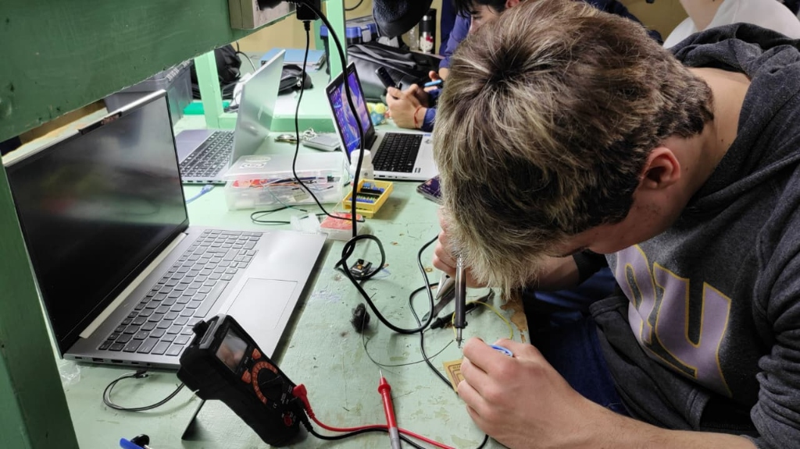

01
Construcciones
Maquetas de viviendas y obras, planos, cómputo de materiales y propuestas de intervención urbana.
ExpoTec
La ExpoTec es la exposición anual en la que las tres especialidades —Construcciones, Informática y Electrónica— muestran los proyectos desarrollados durante el ciclo lectivo. Las aulas y los talleres se abren a las familias, a otras escuelas y a la comunidad de Mar del Plata.
Cada equipo explica su proyecto: de dónde surgió la idea, qué problema resuelve, cómo se calculó, se dibujó, se programó o se montó, y qué aprendieron en el camino. No hay stand sin prototipo funcionando, plano terminado o demo en pantalla.
Una vez al año
Las 3 especialidades
Familias, escuelas y comunidad
Juan B. Justo 4287
Proyectos en exposición
Maquetas de viviendas y obras, planos, cómputo de materiales y propuestas de intervención urbana.

Aplicaciones web y de escritorio, videojuegos, redes, armado de equipos y proyectos de datos.

Placas, sistemas de control y automatización, sensores, robótica y proyectos con microcontroladores.